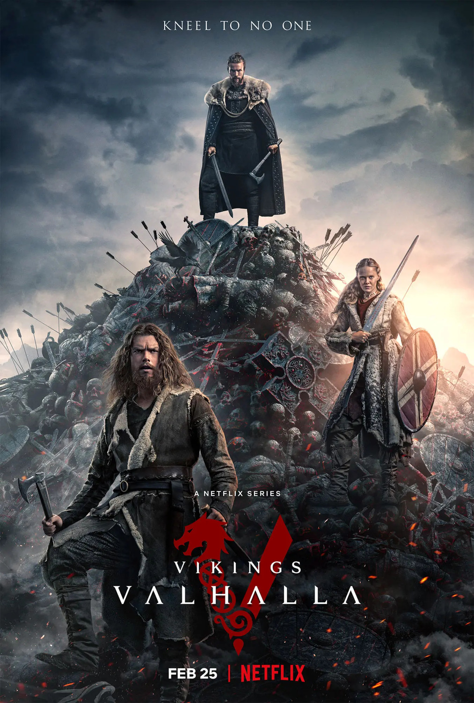
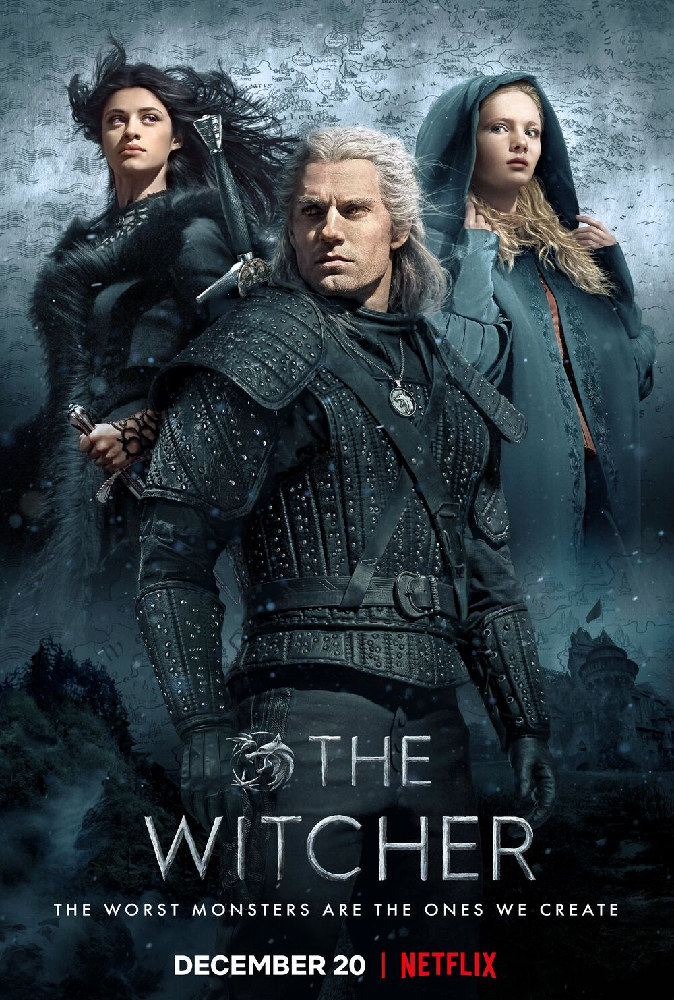

Merhaba, ben Oğuzhan Kemhacıoğlu. Trabzon'da yaşıyorum. Web geliştirme ile ilgileniyorum. Patika'nın bu eğitim serisi sayesinde harika şeyler öğrendim ve öğrenmeye devam ediyorum. Sizi de aramızda görmek isteriz!
İçerik üretmek 📸
Kod yazmak 😉
Oyun oynamak 🎮
Fotoğrafçılık 📸
Kitap okumak 📚
Film ve Dizi izlemek 🎬
Kamp yapmak 🏕️
Vikings: Valhalla
Vikings: Valhalla, Jeb Stuart tarafından kurgulanan, tarihi aksiyon-kurgu drama türündeki bir televizyon dizisidir. Vikings dizisinin uyarlamasıdır. Orijinal diziden bir asır sonra baÅŸlamaktadır ve Leif Ericson, FreydÃs EirÃksdóttir, Harald Hardrada ve Norman Kralı I. William (Viking soyundan) gibi tarihite bilinen Kuzeylilerden bazılarının hikâyelerini de anlatacaktır.
The Witcher
The Witcher, senaryosu Lauren Schmidt Hissrich tarafından yazılan ve Netflix'te yayımlanan fantezi drama türündeki Amerikan yapımı internet dizisi. Andrzej Sapkowski'nin aynı adlı kitap serisine dayanan dizinin ilk sezonu 20 Aralık 2019 tarihinde yayımlanmıştır. Dizinin 2. Sezonu ise 17 Aralık 2021'de yayımlanmıştır.